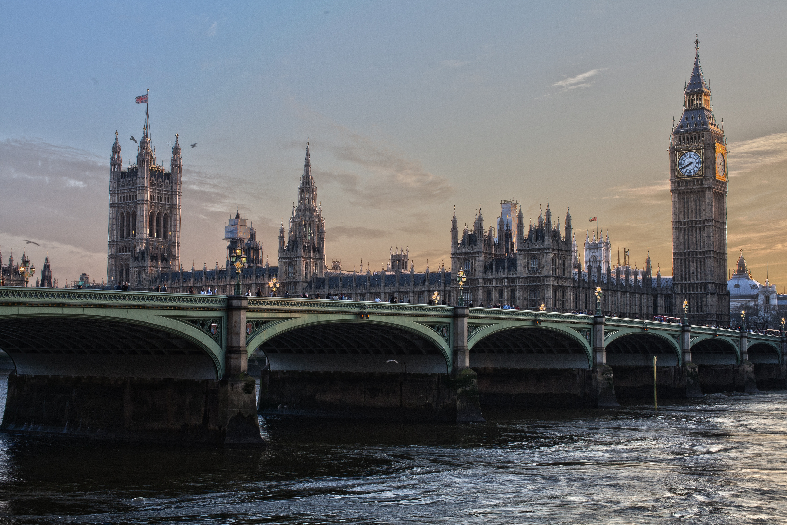

Most wiszący nad rzeką Avon w zachodniej Anglii, wybudowany na granicy dzielnicy Bristolu Clifton (stąd nazwa) i hrabstwa Somerset. Składa się z dwóch wież oraz szeregu konstrukcji wiszących. Jest symbolem miasta Bristol. Most otwarto w 1864 roku, już po śmierci głównego inżyniera oraz projektanta Isambarda Brunela. Pomimo upływu prawie 150 lat od jego otwarcia, nie dokonywano żadnych remontów kapitalnych. Z mostu oddano pierwszy w historii udokumentowany skok na bungee w roku 1979. Most, sfotografowany w czasie trwania „International Balloon Fiesta”, znalazł się na jednej z tapet logowania systemu Windows 10.
Pałac Westminsterski

Pałac Westminsterski - zabytkowy, neogotycki pałac w Londynie, w Wielkiej Brytanii; siedziba brytyjskiej Izby Gmin, Izby Lordów oraz urzędów z nimi związanych, w 1987 roku wpisany na listę światowego dziedzictwa UNESCO. Jego budowę rozpoczął Knut Wielki w 1016 roku. W XIII wieku stał się politycznym centrum angielskiej państwowości. Do 1512 roku służył jako siedziba monarchy. Od XIII stulecia obradował w nim Parlament. Został przebudowany w XVIII wieku w związku z ustanowieniem Królestwa Wielkiej Brytanii i związanym z tym powiększeniem aparatu administracyjnego. W 1834 roku spłonął w pożarze. Został odbudowany w latach 1840–1870 przez Charlesa Barry’ego przy współpracy z Augustusem Puginem. W latach 1940–1941 ucierpiał podczas nalotów niemieckich. Prace remontowe trwały od 1945 do 1950 roku. W latach 1981–1994 został poddany renowacji. Składa się z trzech skrzydeł. Najważniejsze pomieszczenia umiejscowione są w osi centralnej. W samym środku znajduje się Central Lobby, po obu jego stronach, w takiej samej odległości znajdują się sale posiedzeń Izby Lordów (Lords Chamber) oraz Izby Gmin (Commons Chamber). Na północnym krańcu znajduje się wieża Elizabeth Tower, określana również jako Big Ben.
Royal Albert Hall
Royal Albert Hall - sala koncertowa w Londynie poświęcona mężowi królowej Wiktorii, księciu Albertowi. Mieści się w dzielnicy South Kensington w centralnym Londynie, w rejonie znanym powszechnie jako Albertopolis. The Royal Albert Hall jest częścią pomnika upamiętniającego Alberta – niedaleko znajduje się Albert Memorial, pomnik ku jego czci. Jest to także miejsce, gdzie znajdują się największe w Wielkiej Brytanii organy oraz siedziba Proms.
York Minster
York Minster - gotycka katedra położona w Yorku, w hrabstwie North Yorkshire w Anglii. Obok katedry w Kolonii jedna z największych katedr gotyckich w Europie Północnej. Jest siedzibą arcybiskupa Yorku, drugiego co ważności (po arcybiskupie Canterbury) dostojnika w angielskiej hierarchii kościelnej; jest również ośrodkiem administracyjnym diecezji York. Obecnie katedra jest udostępniania do zwiedzania, a opłaty są przeznaczane na renowację.
The British Museum
The British Museum - muzeum narodowe z siedzibą w Londynie, największe muzeum Wielkiej Brytanii i jedno z największych na świecie – posiada ok. 8 milionów eksponatów, szczególnie bogate są zbiory archeologiczne i etnograficzne. Muzeum powstało z inicjatywy irlandzkiego lekarza, przyrodnika i kolekcjonera sir Hansa Sloane’a. Sloane zaczął kolekcjonować okazy roślin i zwierząt w 1687 roku, kiedy znalazł się na Jamajce jako lekarz nowego gubernatora kolonii. Podczas pobytu na wyspie zgromadził ponad 600 obiektów. Jego małżeństwo z Elizabeth Langley Rose, dziedziczką plantacji cukru na Jamajce, przyniosło mu znaczne środki finansowe, które wykorzystał do powiększania zbioru. Przejmował całe kolekcje, m.in. Jamesa Petivera, i kupował interesujące obiekty od podróżników i osadników kolonialnych z terenu całego Imperium Brytyjskiego. W jego zbiorach znajdowało się m.in. 32 tys. monet i medali, 50 tys. książek, druków i rękopisów, 334 zielniki oraz ponad 1000 rzeczy związanych z antykiem. W momencie śmierci Sloane’a w 1753 roku jego kolekcja liczyła 71 tys. obiektów. W swoim testamencie Sloane przekazał całą kolekcję królowi Jerzemu II dla narodu w zamian za wypłatę 20 tys. funtów jego spadkobiercom oraz pod warunkiem, że Parlament utworzy dla kolekcji nowe i ogólnodostępne muzeum publiczne. Monarcha nie wykazał większego zainteresowania zbiorami i odmówił transkacji. Zbiory zostały zaoferowane Parlamentowi, który zdecydował się na kupno, a środki na ten cel zostały zebrane przy pomocy loterii. Ustawa o utworzeniu Muzeum Brytyjskiego (ang. The British Museum Act 1753) została przyjęta przez Parlament 7 czerwca 1753 roku. Muzeum było pierwszą publicznie dostępną placówką tego typu na świecie.